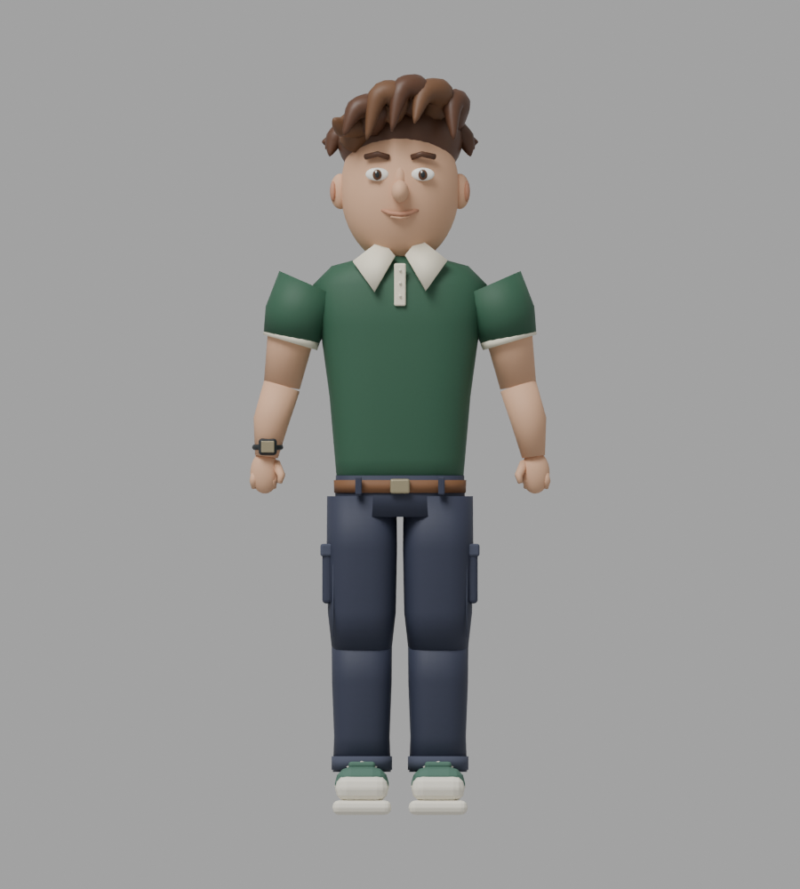
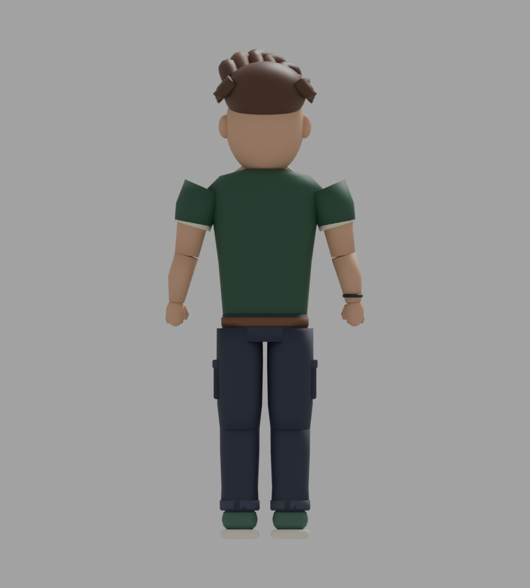
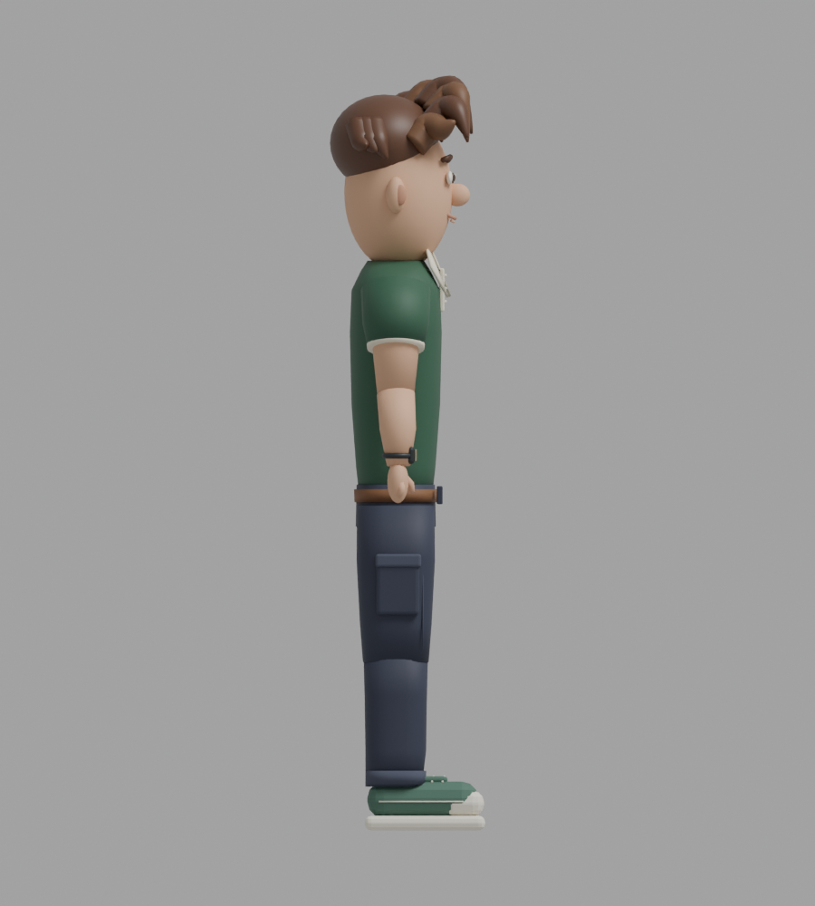
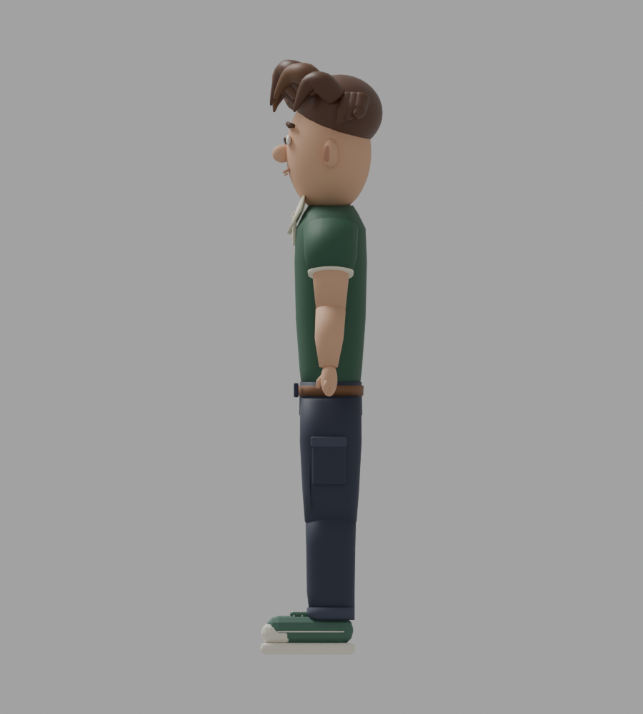
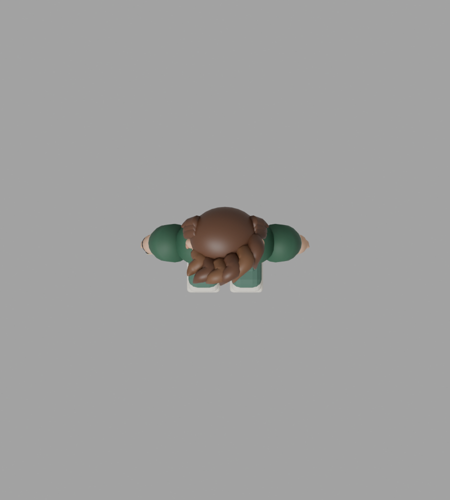
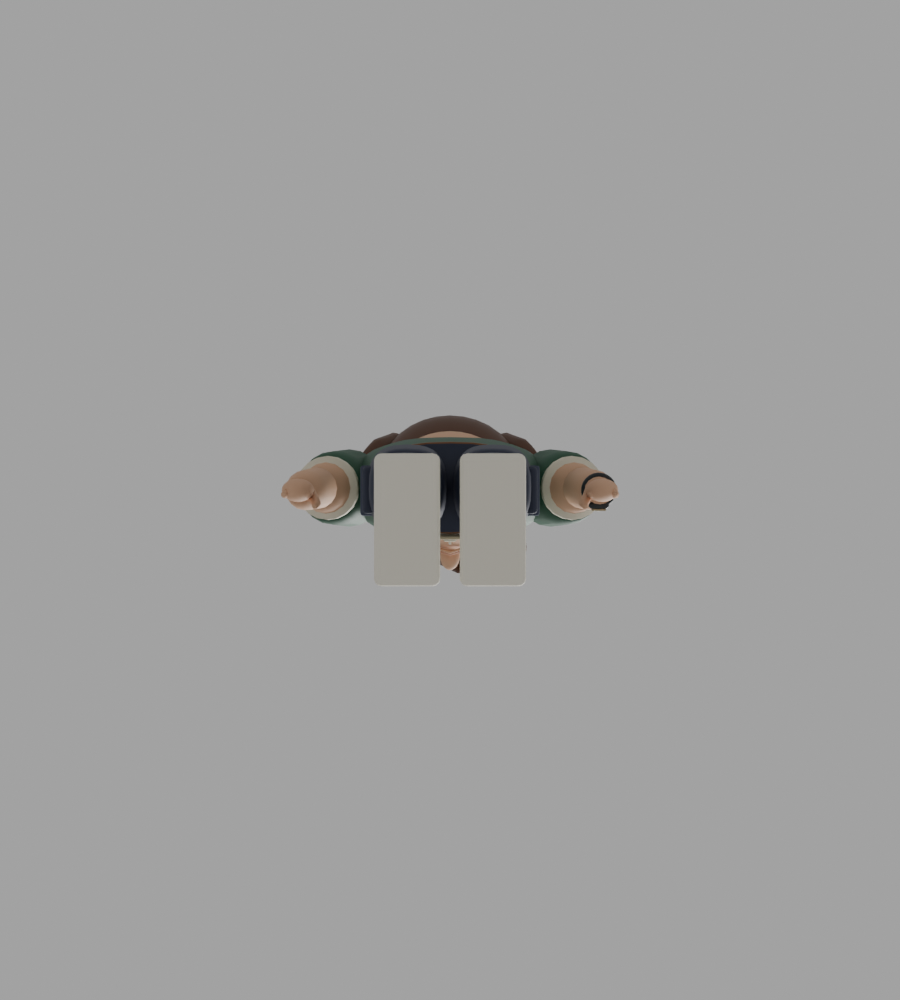

Model sinh viên · Asset dùng chung
Sáu góc dưới đây được render từ student-male-01.glb. Các nhóm tóc, áo, quần, giày và khớp được giữ để mở rộng ngoại hình; chuyển động dùng chung với bộ điều khiển của game.
Đã chuẩn bị danh mục asset cho chức năng chọn hình dáng sau này. Bản này chưa thêm màn hình chọn nhân vật hoặc lưu lựa chọn vào hồ sơ.

Trước
Sau
Trái
Phải
Trên
DướiCấu trúc tái sử dụng
Hông → gối → bàn chân; vai → khuỷu tay → bàn tay. Các node đầu và mũi dùng để gắn tên và xác định hướng mặt. Giữ cùng hợp đồng khớp khi thêm GLB mới vào character-assets.js.
Bạn và khách được phân biệt bằng màu nền tên, không cần đổi màu quần áo. Ảnh phối tham chiếu: mẫu đã chọn.